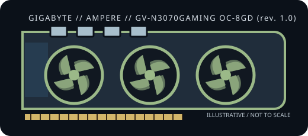

[ NVIDIA GEFORCE // AMPERE RETAIL BOARD ]
GIGABYTE GeForce RTX 3070 GAMING OC 8G Rev. 1.0
2020; GA104-300-A1; Ampere; 5,888 CUDA cores; 8 GB GDDR6, 256-bit; PCI Express 4.0 x16; 220 W nominal board power; auxiliary power 1 × 8-pin + 1 × 6-pin PCIe. This record identifies one board SKU and does not imply identical dimensions, connectors, or power behavior across GPU-family variants.

Recorded board specifications
| Exact board SKU / model | GV-N3070GAMING OC-8GD (rev. 1.0) — GIGABYTE GeForce RTX 3070 GAMING OC 8G Rev. 1.0 |
|---|---|
| GPU and architecture | GA104-300-A1; Ampere; 5,888 CUDA cores; NVIDIA Ampere architecture. |
| Graphics memory / bus | 8 GB GDDR6, 256-bit; discrete GDDR memory. |
| Host interface | PCI Express 4.0 x16 card interface; negotiates with compatible earlier-generation PCIe x16 hosts, subject to platform firmware and system support. |
| Board power | 220 W nominal board power. PSU recommendation is a system-level figure and is not the card's draw. |
| Auxiliary power input | 1 × 8-pin + 1 × 6-pin PCIe |
| Physical dimensions | 286 × 115 × 51 mm; 2.5-slot. Verify chassis clearance, slot occupancy, and cable bend clearance for this exact board revision. |
| Display outputs | 2 × DisplayPort 1.4a; 2 × HDMI 2.1 (up to four displays simultaneously) |
| System PSU guidance | GIGABYTE recommends a 650 W system PSU. |
| Vendor-first generation leaf | NVIDIA GeForce RTX 30 Series desktop cards |
Host, driver and fit compatibility
Install in a full-length PCI Express x16 slot on a platform with firmware and operating-system support for this graphics card. PCIe generations are designed to negotiate backward, but physical clearance, board firmware, power delivery, and the host's documented support still apply. Confirm the exact case envelope and adjacent-slot clearance from the measured dimensions above. Use only the specified PCIe auxiliary power plug(s) and a system PSU that meets the board partner's guidance.
For software, choose the operating system and product family in NVIDIA's official GeForce driver selector and confirm that the offered release supports this RTX 30-series desktop GPU. Windows and Linux package branches and support lifetimes differ; do not infer driver compatibility solely from a PCIe slot or the GPU name. The physical outputs listed above belong to this partner board; maximum supported displays and resolutions can depend on driver, connection type, and display.
Manufacturer and technical references
- GIGABYTE GeForce RTX 3070 GAMING OC 8G Rev. 1.0 — specificationsBoard-partner product page for the exact model/SKU; source for board-specific dimensions, power input, and physical output configuration.
- TechPowerUp — GIGABYTE RTX 3070 GAMING OC board referenceIndependent technical cross-reference for the identified card variant; the board partner listing remains authoritative for revision-specific fit and I/O.
- NVIDIA — GeForce RTX 30 Series desktop graphicsManufacturer generation reference for the Ampere GeForce RTX 30-series family.
- NVIDIA — official GeForce driver lookupChoose the exact GPU and host operating system to verify the currently applicable driver branch.